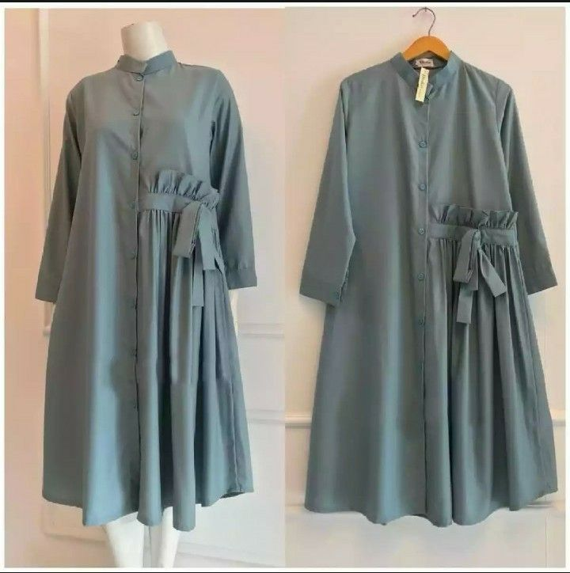
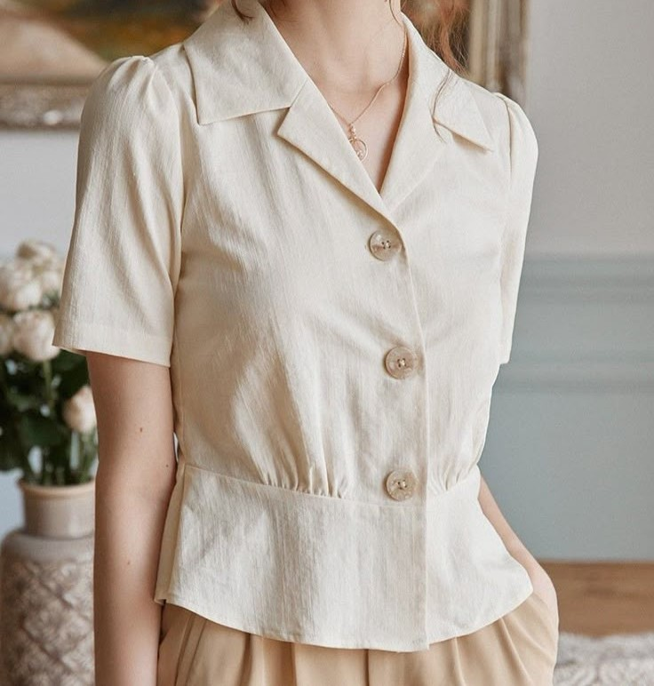
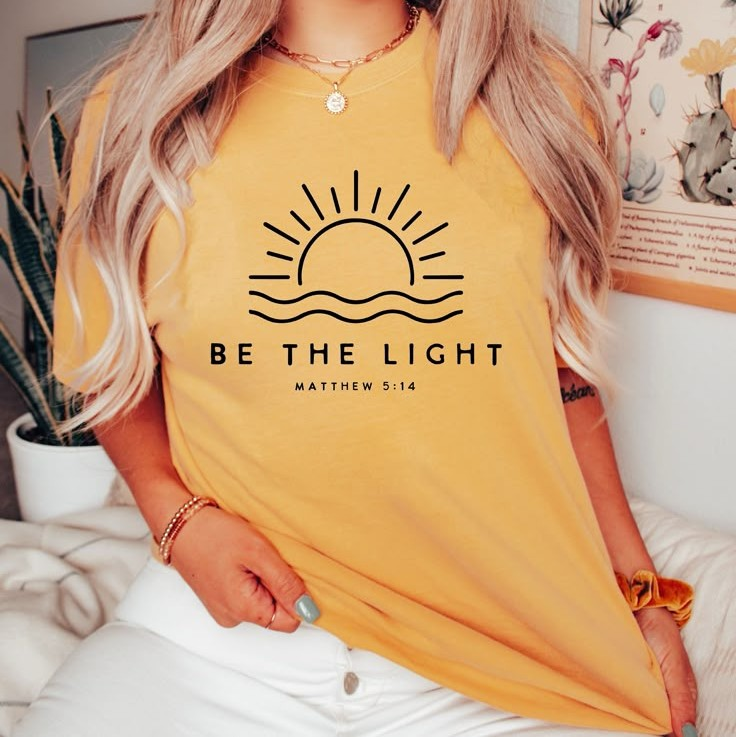
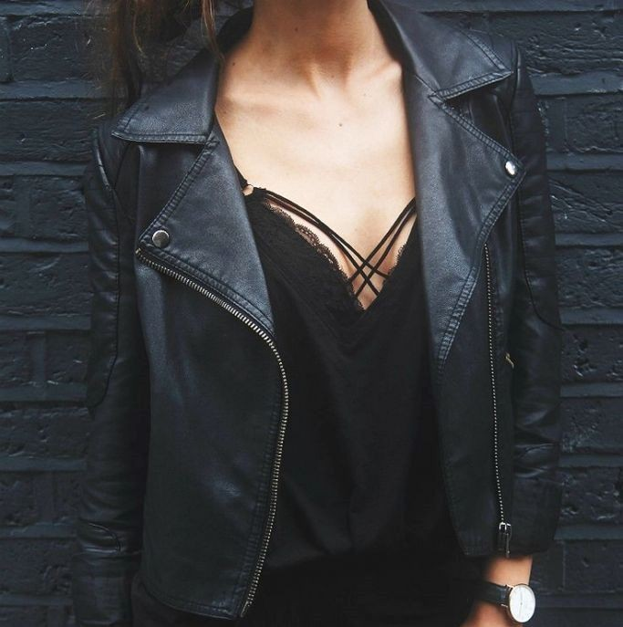
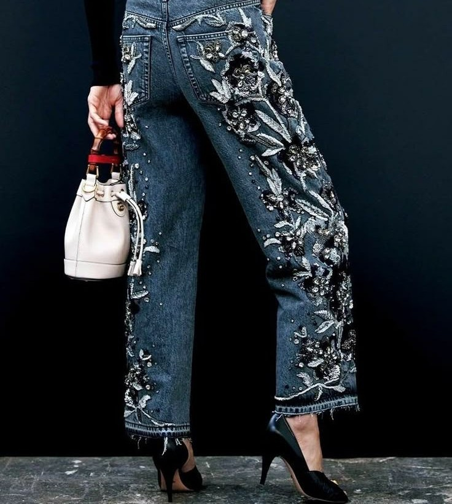
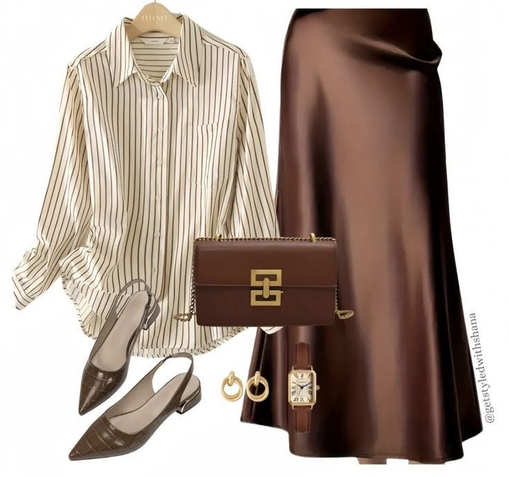

Kategori Fashion

Tunik Modis
Tunik yang nyaman dan stylish, cocok untuk berbagai acara santai maupun formal.

Kemeja Kasual
Kemeja dengan berbagai desain kasual yang nyaman untuk dipakai sehari-hari.

Kaos Trendy
Kaos dengan berbagai motif dan warna yang cocok untuk gaya kasual dan modern.

Jaket Fashionable
Jaket dengan desain keren, cocok untuk berbagai cuaca dan aktivitas luar ruang.

Celana Panjang
Celana panjang dengan berbagai potongan dan warna yang cocok untuk segala acara.

Aksesoris Fashion
Aksesoris fashion yang melengkapi penampilan Anda, dari gelang hingga tas tangan.